Merită prețul? Un medicament, trei agenții, trei răspunsuri
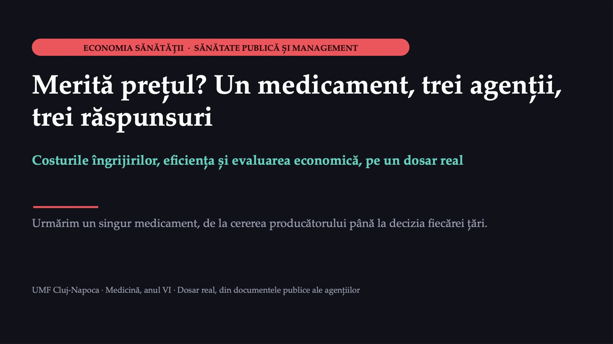
1 / 51Un medicament nou, la ușa sistemului
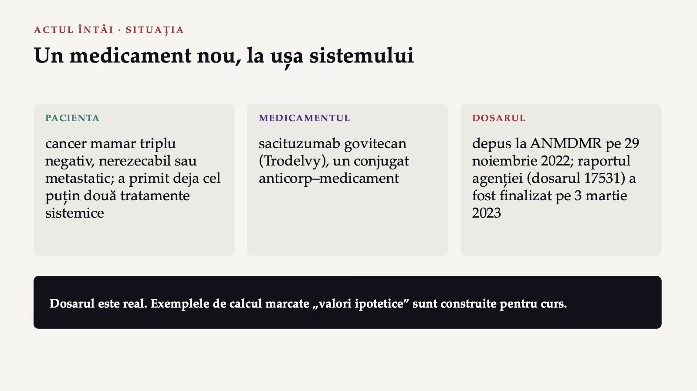
2 / 5110 mg/kg
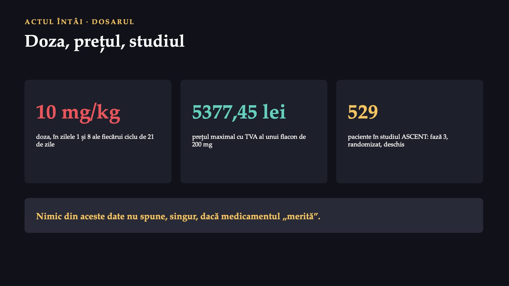
3 / 51Un câștig de ordinul lunilor
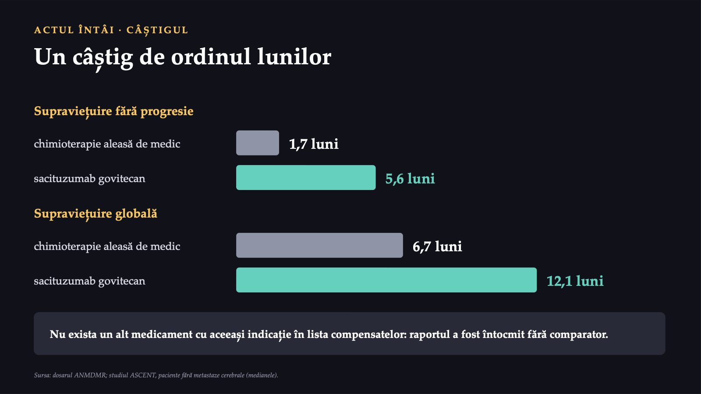
4 / 51Ce întreabă o comisie despre un medicament nou
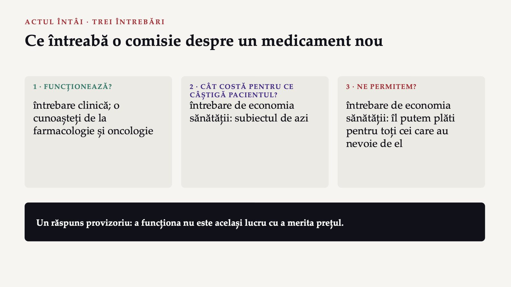
5 / 51Ar trebui sacituzumab govitecan să intre pe lista medicamentelor compensate în România?
![MENTIMETER · VOTUL 1 PRIMA DECIZIE Ar trebui sacituzumab govitecan să intre pe lista medicamentelor compensate în România? Sunteți în comisia care decide. Vot individual, fără discuție înainte. A Da, necondiționat. B Da, dar condiționat, printr-un contract cost-volum sau cost-volum-rezultat cu producătorul. C Nu încă: mai întâi trebuie calculat cât costă un an de viață ajustat pentru calitate câștigat. D Nu: prețul este prea mare pentru câștigul obținut. Rezultatul se proiectează o singură dată. Răspundeți pe telefon, la codul afișat.](diapozitive/C11/006.jpg) 6 / 51
6 / 51Patru lucruri care lipsesc de pe piața sănătății
![DE CE ÎNGRIJIREA NU E O PIAȚĂ OBIȘNUITĂ (1) Patru lucruri care lipsesc de pe piața sănătății INCERTITUDINEA nimeni nu știe când se îmbolnăvește; răspunsul este asigurarea ASIMETRIA INFORMAȚIONALĂ medicul știe mai mult decât pacientul și alege în numele lui HAZARDUL MORAL cine e asigurat plătește la consum mai puțin decât costă; de aici coplățile SELECȚIA ADVERSĂ la asigurarea voluntară se asigură mai ales cei bolnavi, iar prima crește Răspunsul public: asigurarea obligatorie, cu contribuții legate de venit, nu de risc.](diapozitive/C11/007.jpg) 7 / 51
7 / 51Trei motive în plus, toate prezente în dosarul nostru
![DE CE ÎNGRIJIREA NU E O PIAȚĂ OBIȘNUITĂ (2) Trei motive în plus, toate prezente în dosarul nostru EXTERNALITĂȚILE vaccinarea unei persoane îi protejează pe ceilalți; antibioticele folosite fără motiv cresc rezistența pentru toți BUNURILE DE MERIT societatea vrea ca unele îngrijiri să ajungă la toți: îngrijirea prenatală, vaccinarea copiilor, tratamentul tuberculozei PUTEREA DE PIAȚĂ brevetul face din producător singurul vânzător; un singur asigurător public este singurul cumpărător Evaluarea economică înlocuiește „cât cere vânzătorul?” cu „cât valorează pentru pacient și pentru sistem?”.](diapozitive/C11/008.jpg) 8 / 51
8 / 51Patru feluri de costuri
![COSTURILE ÎNGRIJIRILOR Patru feluri de costuri DIRECTE MEDICALE ce consumă sistemul de sănătate: medicamente, consultații, investigații, zile de spitalizare, tratarea efectelor adverse DIRECTE NEMEDICALE ce consumă pacientul și familia în afara sistemului: transport, cazarea însoțitorului, îngrijirea făcută de rude INDIRECTE producția pierdută din cauza bolii sau a decesului: zile de muncă pierdute, pensionare înainte de vreme INTANGIBILE durerea, anxietatea, suferința; greu de exprimat în bani, intră în evaluări prin calitatea vieții Ghidul HAS le împarte în două: directe (inclusiv îngrijirea de către un aparținător) și indirecte.](diapozitive/C11/009.jpg) 9 / 51
9 / 5121,4%
![COSTURILE ÎNGRIJIRILOR · PERSPECTIVA Ce numărăm depinde de cine plătește PLĂTITORUL se numără numai ce plătește fondul de asigurări SISTEMUL DE SĂNĂTATE se adaugă ce plătesc spitalele din alte surse și pacienții prin coplăți SOCIETATEA se adaugă costurile nemedicale și pierderile de productivitate 21,4% din cheltuiala curentă cu sănătatea, în 2022, era plătită direct din buzunarul pacienților, în România Când citiți o evaluare, căutați mai întâi perspectiva: ea explică multe dintre diferențele dintre țări.](diapozitive/C11/010.jpg) 10 / 51
10 / 51Fiecare leu cheltuit nu mai poate fi cheltuit altundeva
![COSTUL DE OPORTUNITATE Fiecare leu cheltuit nu mai poate fi cheltuit altundeva COSTUL REAL nu este suma plătită, ci valoarea celei mai bune alternative la care renunțăm UN EXEMPLU un medicament oncologic plătit din fond poate însemna operații de cataractă sau proteze de șold care nu se mai fac O CAPCANĂ „Costul” unui medicament nu este prețul flaconului: include doza totală, administrarea, monitorizarea, efectele adverse, tratamentele de după progresie Ideea aceasta stă la baza tuturor pragurilor de cost-eficacitate.](diapozitive/C11/011.jpg) 11 / 51
11 / 51De la doza pe kilogram la lei
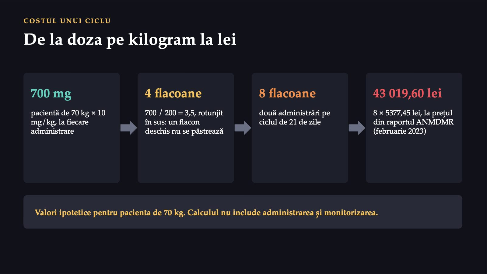
12 / 51Trei cuvinte asemănătoare, trei lucruri diferite
![EFICACITATE, EFECTIVITATE, EFICIENȚĂ Trei cuvinte asemănătoare, trei lucruri diferite EFICACITATEA efectul în condiții ideale, controlate, ca într-un studiu clinic randomizat: pacienți selectați, urmărire atentă EFECTIVITATEA efectul în practica obișnuită, la pacienți neselectați, cu boli asociate și aderență imperfectă EFICIENȚA raportul dintre rezultate și resurse: cel mai mare rezultat cu resursele date Rezultatele studiului ASCENT sunt de eficacitate. Agenția franceză a cerut date de efectivitate.](diapozitive/C11/013.jpg) 13 / 51
13 / 51Să facem lucrurile bine sau să facem lucrurile potrivite?
![EFICIENȚĂ ȘI ECHITATE Să facem lucrurile bine sau să facem lucrurile potrivite? EFICIENȚA TEHNICĂ facem lucrul acesta cu cele mai puține resurse? Aceeași operație cu o zi de spitalizare mai puțin. EFICIENȚA ALOCATIVĂ facem lucrurile potrivite? Finanțăm îngrijirile care aduc cel mai mare câștig de sănătate pentru banii disponibili. ECHITATEA cea mai eficientă alocare nu este neapărat cea mai dreaptă; bolile rare sau foarte grave pot rămâne fără nimic Evaluarea economică a medicamentelor noi este, în primul rând, un instrument de eficiență alocativă.](diapozitive/C11/014.jpg) 14 / 51
14 / 51Alegeți tipul după întrebare
![TIPURILE DE EVALUARE ECONOMICĂ Alegeți tipul după întrebare MINIMIZAREA COSTURILOR rezultate echivalente: se alege cea mai ieftină; un generic față de original COST-EFICACITATE o boală, un rezultat clinic natural: ani câștigați, cazuri evitate COST-UTILITATE rezultate care combină durata și calitatea vieții; unitatea este anul de viață ajustat pentru calitate COST-BENEFICIU și rezultatele în bani; HAS nu o recomandă în analiza de referință Mulți numesc analiza cost-utilitate tot „cost-eficacitate”, inclusiv în textele agențiilor.](diapozitive/C11/015.jpg) 15 / 51
15 / 51Doi factori: cât trăiești și cum trăiești
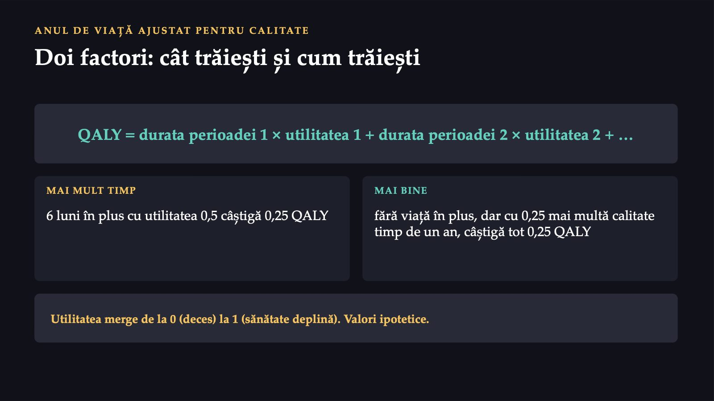
16 / 51Cât costă în plus fiecare QALY în plus
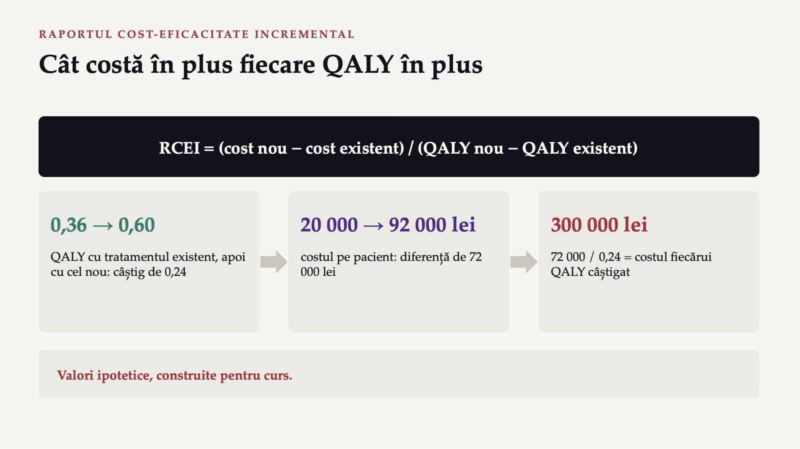
17 / 51Trei lucruri de înțeles din formulă
 18 / 51
18 / 51Patru cadrane, o singură zonă a deciziei
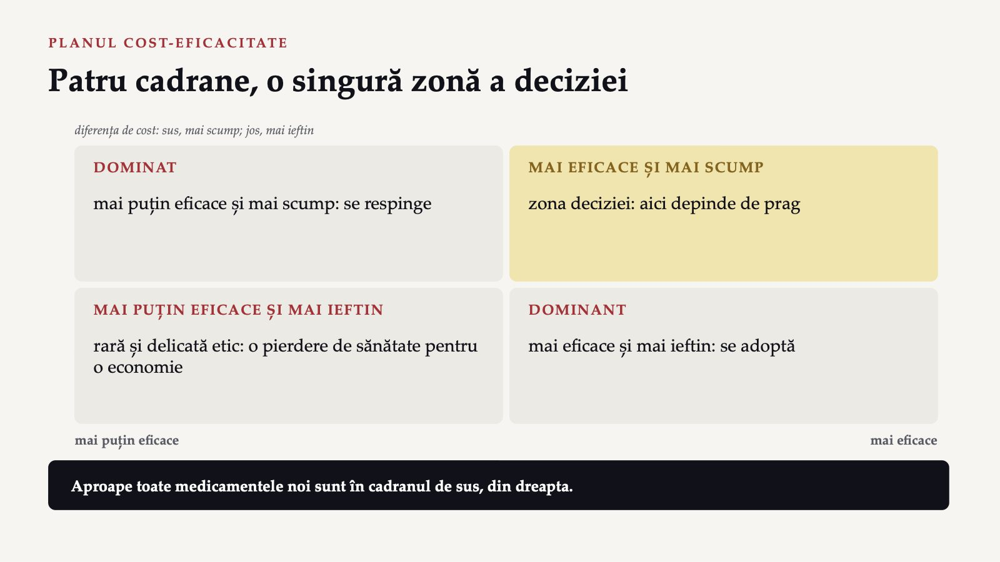
19 / 51Incertitudinea: sensibilitate, extrapolare, actualizare
![CÂT DE SIGUR ESTE RAPORTUL Incertitudinea: sensibilitate, extrapolare, actualizare ANALIZA DE SENSIBILITATE schimbă pe rând un parametru sau, probabilist, toți odată; rezultatul se desenează ca o curbă de acceptabilitate EXTRAPOLAREA studiul urmărește pacienții luni; modelul estimează restul vieții. Curbe diferite dau rapoarte foarte diferite ACTUALIZAREA costurile și câștigurile viitoare se aduc la valoarea de azi; HAS: 2,5% pentru orizonturi sub 30 de ani Întrebarea utilă nu este „cât este raportul?”, ci „cât de sigur este raportul?”.](diapozitive/C11/020.jpg) 20 / 51
20 / 51Un tratament nou câștigă un QALY. Ar trebui ca acest QALY să valoreze la fel dacă pacientul are optzeci de ani sau douăzeci de ani?
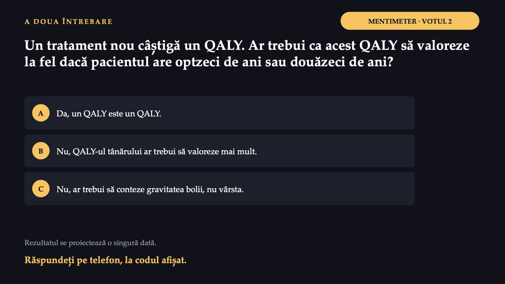
21 / 51Raportul, singur, nu decide nimic
 22 / 51
22 / 51Mai multă pondere pentru gravitate, nu pentru vârstă
 23 / 51
23 / 51Un prag fix nu ar trebui folosit niciodată singur
![ORGANIZAȚIA MONDIALĂ A SĂNĂTĂȚII Un prag fix nu ar trebui folosit niciodată singur 2005 sub venitul mediu pe locuitor pentru un an de viață ajustat pentru dizabilitate evitat: foarte cost-eficace; sub de trei ori această valoare: cost-eficace 2016 pragurile sunt norme generale, globale; nu spun nimic despre accesibilitate sau impact bugetar PERU ȘI POLONIA Peru: trastuzumab cost-eficace, dar peste întregul buget pentru cancerul mamar. Polonia, 2012: prag legal de trei ori produsul intern brut pe locuitor Un prag fix nu ar trebui folosit niciodată ca singur criteriu.](diapozitive/C11/024.jpg) 24 / 51
24 / 51Unii interzic pragul, alții nu au unul
![STATELE UNITE ȘI ROMÂNIA Unii interzic pragul, alții nu au unul STATELE UNITE legea federală interzice institutului care finanțează cercetarea comparativă a rezultatelor să folosească un prag în dolari pe QALY, pentru a nu scădea valoarea vieții persoanelor cu dizabilități ROMÂNIA nu există un prag de cost-eficacitate; evaluarea tehnologiilor medicale se face numai pentru medicamente, printr-un punctaj legat în mare parte de compensarea din alte țări Un raport dintr-o țară nu se poate muta în alta: prețurile, comparatorul și pragul diferă.](diapozitive/C11/025.jpg) 25 / 51
25 / 51„Merită?” și „ne permitem?” sunt întrebări diferite
 26 / 51
26 / 51Același dosar, în același an, la trei agenții
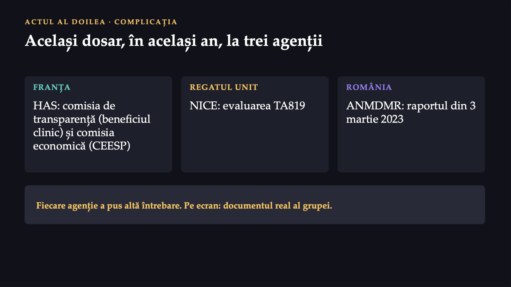
27 / 51Evaluarea clinică devine comună, prețul rămâne național
![EVALUAREA TEHNOLOGIILOR MEDICALE Evaluarea clinică devine comună, prețul rămâne național 12 ianuarie 2025 medicamente noi împotriva cancerului și terapii avansate 13 ianuarie 2028 medicamentele orfane 13 ianuarie 2030 celelalte medicamente noi DEFINIȚIE proces multidisciplinar care sintetizează aspectele medicale, sociale, economice și etice ale unei tehnologii, sistematic, transparent, imparțial CE RĂMÂNE NAȚIONAL prețul și compensarea rămân de competența exclusivă a fiecărui stat Evaluarea europeană spune cât de bine funcționează medicamentul; cât merită plătit rămâne întrebarea fiecărei țări. Sursa: Regulamentul (UE) 2021/2282.](diapozitive/C11/028.jpg) 28 / 51
28 / 51Beneficiul clinic și raportul revendicat de producător
![FRANȚA · HAS Beneficiul clinic și raportul revendicat de producător BENEFICIUL CLINIC beneficiu terapeutic important (aviz din 6 aprilie 2022); producătorul revendicase un SMR important și o ASMR de nivelul II AVIZUL ECONOMIC datat 5 iulie 2022: producătorul revendică 250 086 de euro pe QALY POPULAȚIA ȚINTĂ 2 000 de paciente pe an, estimare moderat supraestimată; 1 075 de euro fără TVA pe flacon în accesul timpuriu SMR: serviciul medical adus. ASMR: ameliorarea față de ce există. Nivelul ASMR acordat nu apare în documentele consultate.](diapozitive/C11/029.jpg) 29 / 51
29 / 51524%
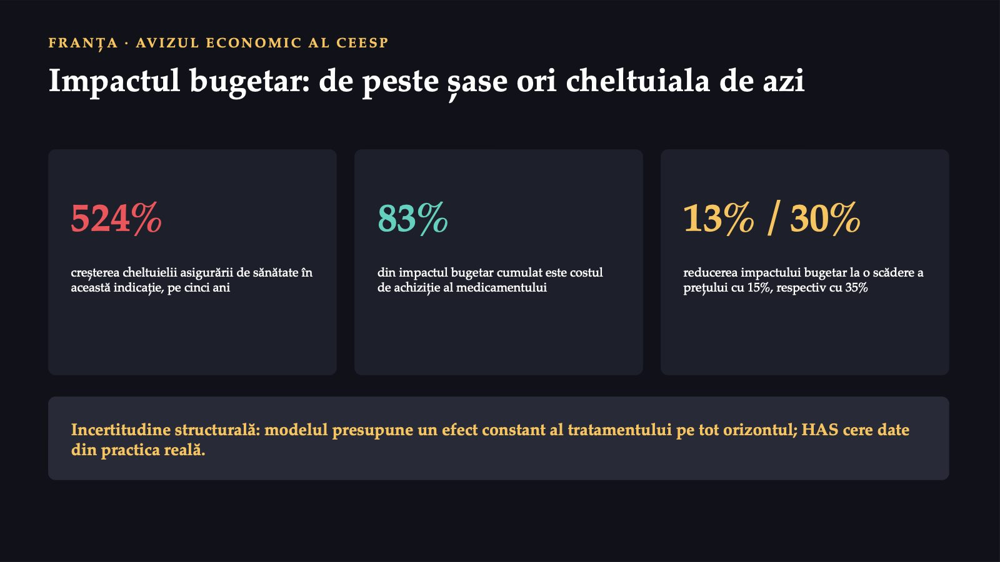
30 / 51793 £
 31 / 51
31 / 51Decizia s-a obținut prin negocierea prețului
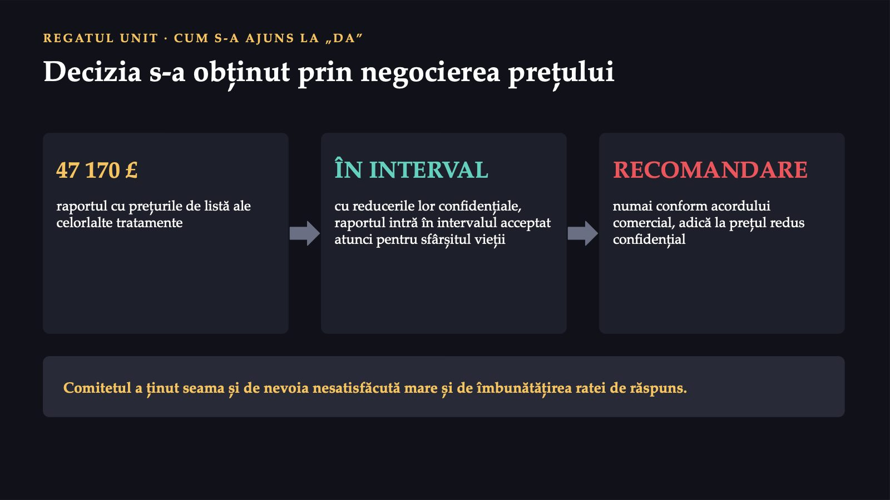
32 / 51Evaluarea românească nu a calculat un raport pentru România
![ROMÂNIA · ANMDMR Evaluarea românească nu a calculat un raport pentru România CE NU S-A CALCULAT niciun raport cost-eficacitate pentru România, niciun impact bugetar; punctele „ETM bazată pe cost-eficacitate” vin din avizele NICE, SMC și ale agențiilor germane CE S-A APLICAT tabelul nr. 7 din ordinul 861/2014, propus de companie: fără comparator relevant în listă CE PUNCTEAZĂ TABELUL HAS, NICE sau SMC, agențiile germane, compensarea în 8–13 state, supraviețuirea sub 24 de luni, creșterea ei cu cel puțin 3 luni Alte criterii punctează un studiu local și impactul bugetar; tabelul aplicat nu le conține.](diapozitive/C11/033.jpg) 33 / 51
33 / 51Cele 85 de puncte ale dosarului 17531
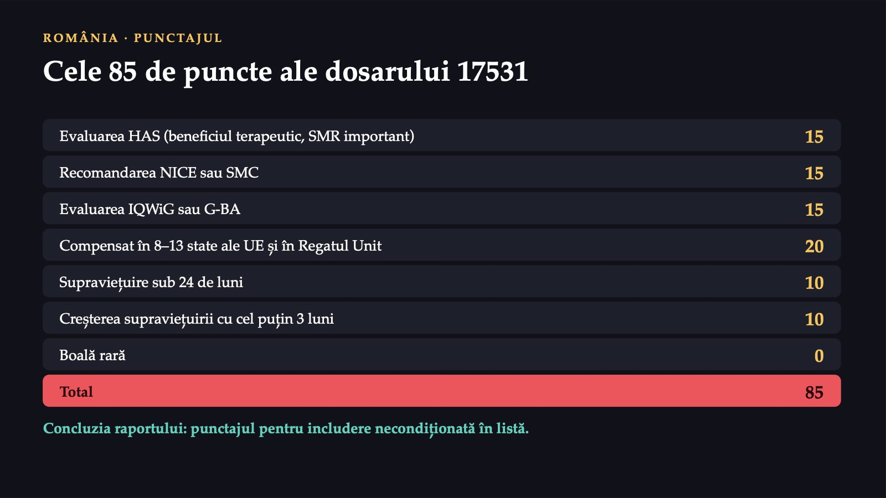
34 / 51Un punctaj construit din deciziile altora
![ROMÂNIA · DOUĂ OBSERVAȚII Un punctaj construit din deciziile altora 45 puncte: alte agenții au evaluat favorabil 20 puncte: alte țări îl compensează 20 puncte: criteriile de supraviețuire PRIMA peste jumătate din puncte (45 din 85) vin din evaluările altor agenții, în total 65 din 85 din deciziile altora; NICE a decis la un preț redus confidențial, necunoscut evaluării românești A DOUA criteriile de supraviețuire folosesc pragurile NICE pentru sfârșitul vieții, 24 de luni și 3 luni; la NICE raportul trebuia calculat, aici aduc puncte fără raport](diapozitive/C11/035.jpg) 35 / 51
35 / 51Ce a întrebat fiecare agenție
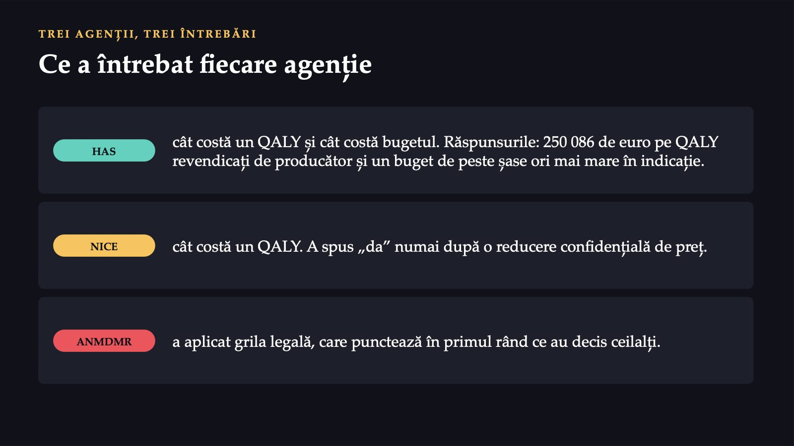
36 / 51Ce ar fi trebuit să afle evaluarea românească înainte de a decide?
![MENTIMETER · VOTUL 3 A DOUA DECIZIE Ce ar fi trebuit să afle evaluarea românească înainte de a decide? Pe ecran: documentul grupei și tabelul punctajului ANMDMR. Vot individual. A Cât costă în România un QALY câștigat față de chimioterapia folosită acum. B Cât va costa fondul, în total, în următorii cinci ani. C Dacă rezultatele studiului se mențin la pacientele tratate în spitalele românești. D Nimic în plus: evaluările celorlalte agenții sunt suficiente. Rezultatul se proiectează o singură dată. Răspundeți pe telefon, la codul afișat.](diapozitive/C11/037.jpg) 37 / 51
37 / 51Ce spun textele despre cea de-a doua decizie
 38 / 51
38 / 51Ce au hotărât agențiile pentru Trodelvy
![ACTUL AL TREILEA · RĂSPUNSUL Ce au hotărât agențiile pentru Trodelvy ROMÂNIA varianta A: 85 de puncte, decizia de includere necondiționată nr. 233 din 6 martie 2023; hotărârea Guvernului nr. 397/2024, de la 1 iunie 2024 REGATUL UNIT cel mai aproape de B: recomandare condiționată de un acord comercial confidențial FRANȚA nici „da”, nici „nu”: 250 086 de euro pe QALY revendicat, impact bugetar mare, date reale cerute Varianta C este ce au făcut HAS și NICE înainte de a decide. Varianta D nu a fost aleasă de nicio agenție.](diapozitive/C11/039.jpg) 39 / 51
39 / 51Patru motive pentru care deciziile diferă
![ACTUL AL TREILEA · DE CE DIFERĂ Patru motive pentru care deciziile diferă ÎNTREBAREA PUSĂ HAS și NICE au cerut un raport și i-au judecat incertitudinea; ANMDMR, dovada că alții au evaluat favorabil PREȚUL trei prețuri: negociat confidențial la NICE, acoperit la HAS, maximal publicat la ANMDMR, dar nepunctat COMPARATORUL HAS și NICE au comparat cu chimioterapia folosită; ANMDMR nu a găsit comparator în listă VALORILE SISTEMULUI NICE acceptă un raport mai mare pentru boli grave, dar îl calculează; grila românească dă puncte fără raport](diapozitive/C11/040.jpg) 40 / 51
40 / 51Între „da” și „nu” există o a treia cale
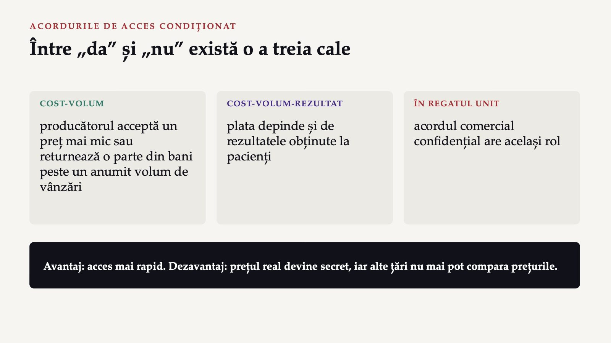
41 / 51Același test, alt medicament: Pluvicto
![ACTUL AL TREILEA · TRANSFERUL Același test, alt medicament: Pluvicto TRATAMENTUL lutețiu-177 vipivotid tetraxetan, pentru cancerul de prostată metastatic rezistent la castrare, după terapie hormonală și taxani ROMÂNIA dosarul 14541, depus pe 30 aprilie 2024; raport finalizat pe 21 august 2024 FRANȚA ȘI REGATUL UNIT Franța, analiza producătorului, față de cabazitaxel: 88 919 € în plus, 0,250 QALY în plus, 355 002 €/QALY pe cinci ani. Regatul Unit: 20 000 £ pe doză; rapoartele nu pot fi publicate Verificare: 88 919 / 355 002 = 0,2505 QALY, adică 0,250 rotunjit.](diapozitive/C11/042.jpg) 42 / 51
42 / 51Folosind ce ați învățat azi, ce ați recomanda pentru Pluvicto în România?
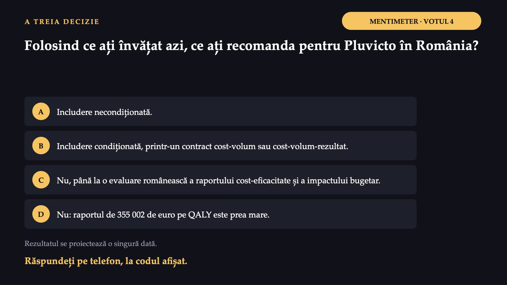
43 / 51Ce au hotărât agențiile pentru Pluvicto
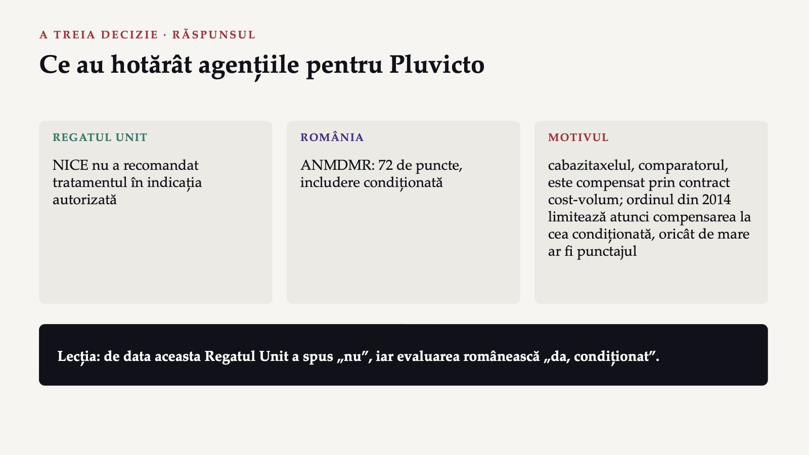
44 / 51Când eficiența nu este singurul criteriu
![ETICA ALOCĂRII Când eficiența nu este singurul criteriu REGULA SALVĂRII obligația de a salva o persoană identificată, oricât ar costa VIAȚA COMPLETĂ cine a trăit mulți ani ar avea un drept mai slab la resurse; argument pentru QALY mai valoroase la tineri DIZABILITATEA o viață cu dizabilitate are utilitate sub 1 și produce mai puțini QALY; de aici interdicția din Statele Unite SFÂRȘITUL VIEȚII prima pentru câștigurile de la sfârșitul vieții; cronicii nu o primesc Le cunoașteți ca să le recunoașteți, nu ca să alegeți unul.](diapozitive/C11/045.jpg) 45 / 51
45 / 51Limitele a ceea ce știm din dosar
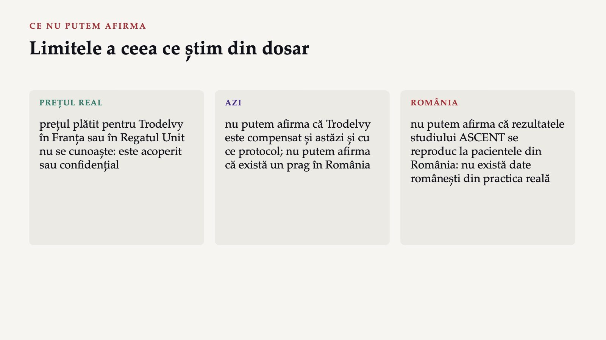
46 / 51Ce rămâne din oră
![RECAPITULARE Ce rămâne din oră 1 Îngrijirea nu este o piață obișnuită: incertitudinea, asimetria informațională, hazardul moral, selecția adversă, externalitățile și puterea de piață justifică intervenția publică. 2 Costurile se numără dintr-o perspectivă declarată; costul real este costul de oportunitate. 3 Raportul cost-eficacitate incremental depinde de comparator, de extrapolare și de un numitor mic. 4 Pragul este o alegere a sistemului, nu se folosește singur, iar impactul bugetar este o întrebare separată. 5 HAS și NICE au calculat raportul; ANMDMR a aplicat o grilă care punctează mai ales deciziile altora.](diapozitive/C11/047.jpg) 47 / 51
47 / 51Zece afirmații, adevărat sau fals
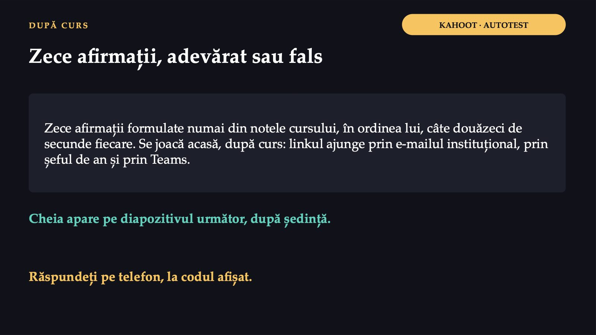
48 / 51Răspunsurile la cele zece afirmații
![CHEIA KAHOOT Răspunsurile la cele zece afirmații 1 A Costul incremental se măsoară față de tratamentul folosit efectiv. 2 F Costul real al unei decizii este suma facturată de spital. 3 A Studiul randomizat măsoară eficacitatea. 4 F Un raport bun garantează un impact bugetar mic. 5 A Un prag fix nu se folosește ca singur criteriu. 6 F În România există un prag oficial al raportului. 7 A Un raport nu se mută în altă țară fără schimbări. 8 A La NICE, recomandarea a fost valabilă numai conform acordului comercial. 9 F Punctajul pornește de la un raport calculat pentru România. 10 A Cu comparator compensat pe contract, cel mult compensare condiționată. A = adevărat, F = fals.](diapozitive/C11/049.jpg) 49 / 51
49 / 51Ce faceți diferit luni dimineață
![LUNI DIMINEAȚA Ce faceți diferit luni dimineață 1 Când un pacient întreabă de ce un medicament nou nu este compensat: a funcționa nu înseamnă a merita prețul; sistemul cântărește ce nu se mai poate plăti din aceiași bani. 2 Când vă vizitează un reprezentant al unui producător: care a fost comparatorul din studiu, cât costă tratamentul complet, ce au spus HAS sau NICE. 3 Când prescrieți un medicament scump: efectivitatea la pacienții voștri poate diferi de eficacitatea din studiu; datele din practica reală sunt ce a cerut agenția franceză.](diapozitive/C11/050.jpg) 50 / 51
50 / 51Înainte să plecați
 51 / 51
51 / 51Săgeți sau spațiu: navigare · O: vedere de ansamblu · N: notele prezentatorului · F: ecran complet · Esc: închidere